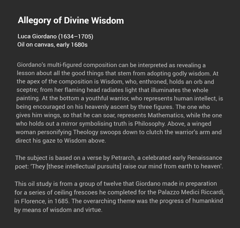
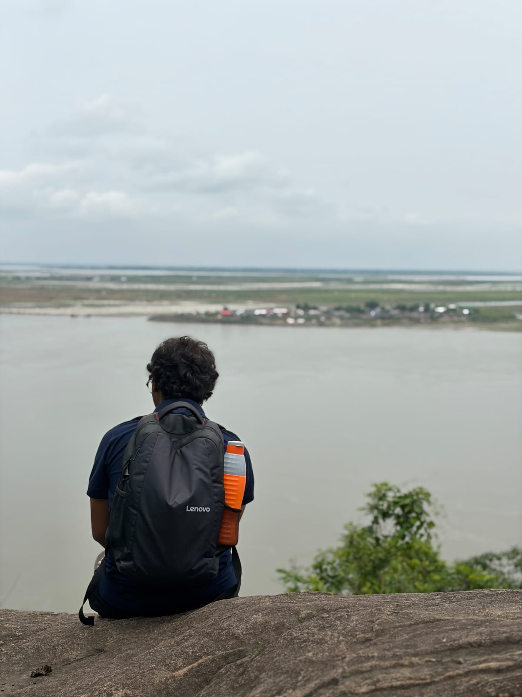

About

I'm a Master's-track (BS–MS) student in the Department of Mathematics at IISER Pune, in the final stretch of an integrated five-year program combining undergraduate and graduate study. My research is in theoretical machine learning: the mathematical foundations of generalization, robustness, and optimization in deep learning, with a particular interest in statistical learning theory, applied probability, and concentration inequalities. My BS–MS thesis, on high-dimensional stochastic approximation, is co-advised by Prof. Anant Raj (Indian Institute of Science) and Prof. Siva Theja Maguluri (Georgia Institute of Technology). After finishing my degree in 2027, I intend to pursue doctoral research in applied mathematics, working toward mathematical guarantees for modern AI.
Research
Research Interests
- Theoretical Machine Learning and Generalization Theory
- Robustness and Adversarial Purification in Deep Learning
- Optimization for Deep Learning
- Applied Probability and Concentration Inequalities
- Mathematics of Data Science
During a PhD, I'd like to explore why deep learning models generalize despite being heavily overparameterized, how risk-sensitive and heavy-tailed loss formulations change what is learnable, and how robustness guarantees for methods such as diffusion-based adversarial purification can be established rigorously rather than purely empirically. More broadly, I'm drawn to settings where classical statistical theory does not yet explain observed deep learning phenomena, such as double descent, and where new probabilistic or optimization-based tools seem to be needed.
Master's Thesis
Title: High-Dimensional Stochastic Approximation
Advisors: Prof. Anant Raj (Indian Institute of Science, Bangalore) and Prof. Siva Theja Maguluri (Georgia Institute of Technology)
This thesis, begun in May 2026, extends my earlier work on risk-sensitive generalization theory into the analysis of high-dimensional stochastic approximation algorithms, co-advised across IISc and Georgia Tech. Further problem details, methodology, and results will be added here as the work progresses. I am also currently investigating the robustness of the MoM KSD goodness-of-fit test.
Past Research
Title: On the Generalization and Robustness in Conditional Value-at-Risk
Advisor: Prof. Anant Raj, Indian Institute of Science (IISc), Bangalore
Most learning algorithms are analyzed in terms of average-case risk, which can be a poor measure of performance when losses are heavy-tailed or when rare but severe outcomes matter. Conditional Value-at-Risk (CVaR) is a risk-sensitive alternative that, until recently, has not been well understood from a generalization-theoretic perspective under heavy-tailed loss distributions.
My contribution was to develop generalization bounds for CVaR in this setting: proofs for fixed-hypothesis bounds, uniform bounds over a hypothesis class, and extensions based on Rademacher complexity. This work is currently under peer review (see Publications below).
Publications and Manuscripts
Preprints
- D. K. Mulumudi, P. Manupriya, G. Aminian, A. Raj. “On the Generalization and Robustness in Conditional Value-at-Risk.” Under peer review, 2026. [arXiv:2602.18053]
Research Reports
- “Theoretical Understanding of Diffusion-Based Adversarial Purification” (research poster), IISER Pune, 2025. [PDF]
- “Finite Field Geometry” (semester project report), IISER Pune, 2025. [PDF]
Master's Thesis
High-Dimensional Stochastic Approximation. Advisors: Prof. Anant Raj (IISc) and Prof. Siva Theja Maguluri (Georgia Institute of Technology). In progress; expected 2027.
Work in Progress
- Robustness of the MoM KSD Goodness-of-Fit Test (with Prof. Anant Raj).
Selected Research Projects
On the Generalization and Robustness in Conditional Value-at-Risk
Studied generalization bounds for CVaR-based, risk-sensitive learning under heavy-tailed losses. Developed proofs for fixed-hypothesis bounds, uniform bounds, and Rademacher complexity extensions.
Theoretical Understanding of Diffusion-Based Adversarial Purification
Investigating adversarial purification in deep learning with an emphasis on theoretical guarantees rather than purely empirical robustness evaluation, under Prof. Bedartha Goswami at IISER Pune.
Robustness of the MoM KSD Goodness-of-Fit Test
Ongoing work examining the robustness properties of the Median-of-Means Kernel Stein Discrepancy (MoM KSD) goodness-of-fit test, with Prof. Anant Raj.
Finite Field Geometry
Explored combinatorial structures in finite field geometry, under the supervision of Prof. Krishna Kaipa at IISER Pune.
Numerical Linear Algebra and Visual Cryptography
Implemented numerical algorithms for matrix computations and explored visual secret-sharing schemes, under the supervision of Prof. Ayan Mahalanobis at IISER Pune.
Education
BS–MS (Integrated Master's) Dual Degree in Mathematics,
IISER Pune, 2022 – 2027 (expected)
Current CGPA: 8.5 / 10
Thesis: High-Dimensional Stochastic Approximation
Advisors: Prof. Anant Raj (IISc) and Prof. Siva Theja Maguluri (Georgia Institute of Technology)
Class 12 (CBSE), Kendriya Vidyalaya, Nellore, Andhra Pradesh, India, 2022 (96.2%)
Class 10 (CBSE), Kendriya Vidyalaya, Nellore, Andhra Pradesh, India, 2020 (93.0%)
Honours and Scholarships
- INSPIRE Scholarship (SHE), Department of Science and Technology, Government of India, 2022 – Present.
Research Experience
Research Collaborator, IISER Pune (August 2025 – Present)
Advisor: Prof. Bedartha Goswami
Working on adversarial purification in deep learning, with an emphasis on establishing theoretical guarantees for robustness rather than relying solely on empirical evaluation. [Poster]
Research Intern, Indian Institute of Science (IISc), Bangalore (May 2025 – Present)
Advisor: Prof. Anant Raj
Studying CVaR generalization bounds for risk-sensitive learning under heavy-tailed losses, including fixed-hypothesis bounds, uniform bounds, and Rademacher complexity extensions. Currently extending this work to the robustness of the MoM KSD goodness-of-fit test, and beginning a new direction on high-dimensional stochastic approximation.
Technical Background
Programming: Python, LaTeX
Research: PyTorch, NumPy
Methods: Statistical Learning Theory, Optimization, Applied Probability, Concentration Inequalities
Academic Activities
- Volunteer, Math Club, IISER Pune, 2022 – Present.
Curriculum Vitae
My current CV is available here: CV.pdf
Contact
Email: mulumudi.dineshkarthik@students.iiserpune.ac.inGitHub: github.com/dineshkarthikml
Office / Lab: Lab 226, CSA, IISc Bangalore
I am always happy to discuss research related to theoretical machine learning, generalization theory, robustness, and optimization, and I'm open to new collaborations.
Things That Interest Me
Hobby projects, things I read and listen to, and anything else outside research that I’m exploring: more about who I am beyond the CV.
Mathematics
Mathematics can give us “wings,” a way to reach beyond what intuition alone allows us to see.

Allegory of Divine Wisdom, Luca Giordano, oil on canvas, early 1680s. Images via Michel Talagrand’s website.
Movies & Series
Movies and series I've watched over the years, across languages and genres, from Love Letter to The Odyssey. See the full list →
Interesting Reads
A few essays and notes I keep coming back to:
- Written by Witten? ChatGPT Ate My Homework, IMS Bulletin, Nov 2025.
- Notes on Writing, Mark Schmidt, UBC.
- The Art of Doing Science and Engineering: Learning to Learn, Richard Hamming.
- Importance of the Mathematical Foundations of Machine Learning Methods for Scientific and Engineering Applications, arXiv, 2018.
- Some Thoughts on Mathematics of Data Science, Shahar Mendelson.
The Two Cultures
Three takes on the same theme, decades apart:
- The Two Cultures, C. P. Snow, 1959.
- The Two Cultures of Mathematics, Timothy Gowers.
- Statistical Modeling: The Two Cultures, Leo Breiman, Statistical Science, 2001.
Music, Radio & Books
In my free time, music and radio keep me busy. I enjoy archived radio plays from All India Radio and the BBC, especially The Hitchhiker's Guide to the Galaxy radio series.
I also read a fair bit of science fiction. Ted Chiang is my favorite; his short story Catching Crumbs from the Table (Nature Futures) is a good example of his work, alongside Isaac Asimov and Stephen Baxter.
Travel

Looking out over the Brahmaputra, unintentionally in the pose of Caspar David Friedrich's Wanderer above the Sea of Fog.
Essays
Beyond the Hype: What Is Artificial Intelligence Really Learning?
A deep dive into the nature of AI learning versus scientific
understanding, December 2025.
Read the full article →
I am currently working on a few more posts. Check back later.